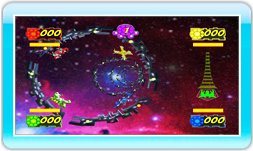

10 |
Difensore dello spazio |
 |
|

In questo sparatutto spaziale ad alta velocità, affronterai diverse ondate di malvagi droni alieni, viaggiando a velocità supersoniche in tunnel spazio-temporali. La tua navetta e i droni nemici possono muoversi solo lungo le pareti del tunnel. Potrai sparare e schivare gli ostacoli. Il gioco è suddiviso in round chiamati "Incontri", che a loro volta si dividono in diverse ondate, ognuna delle quali presenta una sfida differente, come un campo di asteroidi, uno squadrone di droni alieni o perfino delle corazzate giganti! Usa il Control Stick per regolare la velocità e muoverti lateralmente nel tunnel. Premi Esegui un avvitamento per schivare gli ostacoli e i missili! |
 per usare i blaster.
per usare i blaster.  |
 |
 |